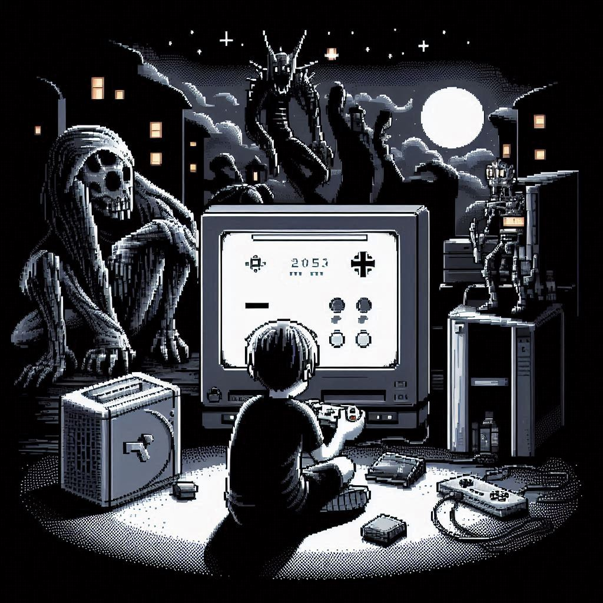

<!DOCTYPE html>
<html lang="es">

</html>
<html>

<head>
    <meta charset="UTF-8" />
    <title>Practica de CSS</title>
    <link rel="stylesheet" href="styles.css">
    <meta name="viewport" content="width=device-width, initial-scale=1.0">

</head>

<body>
    <main>
        <header>
            
            <div class="contenedor">
                <nav>
                    <ul>
                        <li><a href="#Home">Home</a></li>
                        <li><a href="#Nuestra-Historia">Nuestra historia</a></li>
                        <li><a href="#Menu">Menu</a></li>
                        <li><a href="#Personal">Personal</a></li>
                        <li><a href="#Redes Sociales">Redes Sociales</li>
                    </ul>
                </nav>
            </div>

        </header>

        <section class="estilo">
            <a href="formulario.html" class="cta-button">Reserva tu reseña ahora y recibe un descuento del 15%.</a>
        </section>


        <section class="estilo" id="Home">
            <div class="home-intro">
                <h2>Bienvenidos al mundo de videojuegos</h2>
                <p>¿Listo para embarcarte en una nueva aventura? En Glitch Reviews, te llevamos de viaje por los
                    mundos virtuales más emocionantes. Desde los gráficos más impresionantes hasta las historias más
                    conmovedoras, aquí encontrarás todo lo que necesitas saber antes de comprar tu próximo videojuego.
                    ¡Prepárate para vivir experiencias inolvidables!
                </p>
            </div>


        </section>


        <section class="estilo" id="Nuestra-Historia">
            <div class="historia-grid">
                <h2>Nuestra historia:
                    Desde los días de los 8 bits hasta la realidad virtual.</h2>

                

                <p>Glitch Reviews ha sido tu guía en el mundo de los videojuegos. Nacimos en un pequeño sótano lleno de
                    consolas antiguas y una pasión
                    inquebrantable por los juegos. Lo que comenzó como un blog personal para compartir nuestras
                    opiniones con amigos, rápidamente se convirtió en una referencia para miles de gamers. Hemos
                    presenciado la evolución de la industria, desde los gráficos pixelados hasta los mundos abiertos más
                    inmersivos. Nuestra misión sigue siendo la misma: ofrecer reseñas honestas, análisis profundos y
                    recomendaciones personalizadas para ayudarte a encontrar tu próxima gran aventura.</p>
            </div>
        </section>


        <section class="estilo" id="Menu">
            <h2>Ve nuestro menu de Reviews</h2>
            <div class="menu-contenedor">

                <a href="reviewRE4.html">
                    <div class="card">
                        
                        <h3>Resident Evil 4 Remake: Un clásico reinventado</h3>
                        <p>Capcom ha logrado una hazaña impresionante al recrear uno de los videojuegos más queridos de
                            la historia. Resident Evil 4 Remake no solo es fiel al original, sino que lo mejora en todos
                            los aspectos.</p>
                    </div>
                </a>

                <a href="reviewGTAV.html">
                    <div class="card">
                        
                        <h3>Grand Theft Auto V: Un mundo abierto que sigue cautivando</h3>
                        <p>Grand Theft Auto V, lanzado en 2013, sigue siendo uno de los videojuegos más populares y
                            aclamados de la historia. Este título de mundo abierto desarrollado por Rockstar North nos
                            sumerge en la ficticia ciudad de Los Santos, un vibrante y corrupto microcosmos de la
                            cultura estadounidense.</p>
                    </div>
                </a>

                <a href="reviewKOFXIII.html">
                    <div class="card">
                        
                        <h3>The King of Fighters XIII: Un clásico moderno de los juegos de lucha</h3>
                        <p>The King of Fighters XIII, lanzado en 2010, es considerado por muchos fans como uno de los
                            mejores juegos de lucha en 2D de todos los tiempos. Desarrollado por SNK Playmore, este
                            título continúa la larga tradición de la saga, ofreciendo un sistema de combate profundo y
                            satisfactorio, un roster de personajes icónicos y un apartado visual impresionante.</p>
                    </div>
                </a>


            </div>
        </section>

        <section class="estilo" id="Personal">


            <h2>Conoce al personal</h2>
            <div class="contpersonal">
                <div class="personal-card">
                    
                    <h3>Juan Pérez</h3>
                    <p>Gamer desde niño, apasionado por los RPG y los shooters. En mis reviews encontrarás análisis detallados y opiniones honestas.</p>
                  </div>
                  
                  <div class="personal-card">
                    
                    <h3>María López</h3>
                    <p>Experta en juegos indie y narrativa interactiva. Busco descubrir joyas ocultas y compartir mi amor por los buenos guiones.</p>
                  </div>
                  
                  <div class="personal-card">
                    
                    <h3>Carlos García</h3>
                    <p>Fanático de los esports y los juegos competitivos. Analizo mecánicas de juego, equipos y estrategias para ayudarte a mejorar.</p>
                  </div>
                  
                  <div class="personal-card">
                    
                    <h3>Ana Martínez</h3>
                    <p>Enfocada en juegos para móviles y casuals. Busco juegos divertidos y accesibles para todos los públicos.</p>
                  </div>
                  
                  <div class="personal-card">
                    
                    <h3>David Rodríguez</h3>
                    <p>Amante de los juegos de mundo abierto y la exploración. Desvelo todos los secretos de los juegos que pruebo.</p>
                  </div>
            </div>

        </section>

        <section class="estilo" id="Redes Sociales">
            <h2>Siguenos en nuestras redes sociales</h2>
            <p>Obten codigos de Steam por seguirnos</p>
            <ul class="redes-sociales">
                <li><a href="https://www.facebook.com/JsusGnz/">Facebook<i class="fab fa-facebook"></i></a></li>
                <li><a href="https://x.com/yisusgl95">Twitter (X)<i class="fab fa-twitter"></i></a></li>
                <li><a href="https://www.instagram.com/ll.yisus.ll/">Instagram<i class="fab f instagram"></i></a></li>
            </ul>
            <div class="prueba3">
                <p>este es 
                    un
                    texto


                    a


                    a


                    a


                    a


                    
                    en
                    blanco
                    de
                    relleno
    
                </p>
            </div>
        </section>


    </main>

    <footer>
        <div class="prueba">
            <p class="prueba2">© [Jesus GL] [2024]. Todos los derechos reservados. | Política de privacidad | Términos
                de uso</p>
        </div>
        
    </footer>
</body>

</html>